UDN
Search public documentation:
UsingStaticMeshActors
日本語訳
中国翻译
한국어
Interested in the Unreal Engine?
Visit the Unreal Technology site.
Looking for jobs and company info?
Check out the Epic games site.
Questions about support via UDN?
Contact the UDN Staff
中国翻译
한국어
Interested in the Unreal Engine?
Visit the Unreal Technology site.
Looking for jobs and company info?
Check out the Epic games site.
Questions about support via UDN?
Contact the UDN Staff
UE3 Home > Static Meshes > Using StaticMeshActors
UE3 Home > Level Designer > Using StaticMeshActors
UE3 Home > Level Designer > Using StaticMeshActors
Using StaticMeshActors
Overview
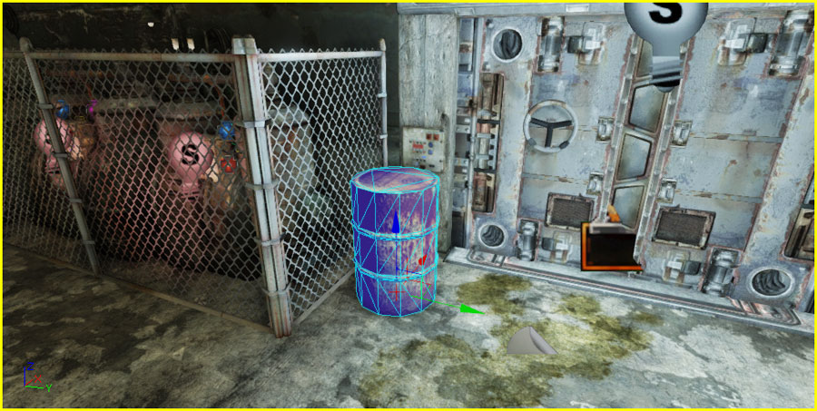
Placement
- In the Content Browser, select the StaticMesh you want to add to the map as a StaticMeshActor.
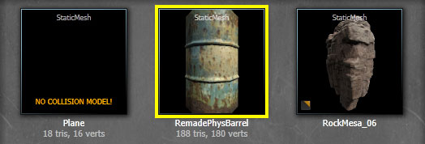 - Right-click in the viewport where you want to add the mesh and choose Add StaticMesh: [MeshAssetPath] from the context menu. The location does not need to be exact. You can always reposition, rotate, scale the mesh afterwards.
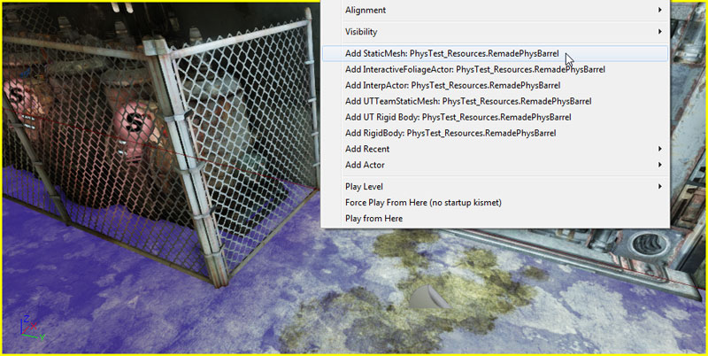 - The StaticMesh has been placed in the map as a StaticMeshActor, as seen in the Property Window.
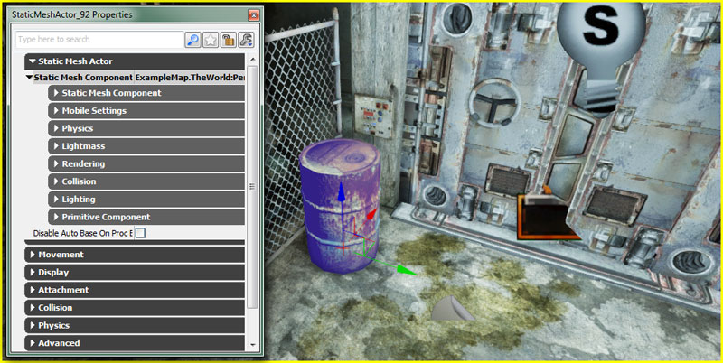
- In the Content Browser, locate the StaticMesh you want to add to the map as a StaticMeshActor.
- Left-Click on the StaticMesh in the Content Browser and drag the mouse (while holding the left mouse button down) from the Content Browser to the location in the viewport where you want to place the mesh. The location does not need to be exact. You can always reposition, rotate, scale the mesh afterwards.
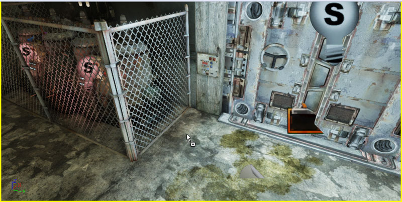 - Release the left mouse button to place the mesh in the map as a StaticMeshActor, as seen in the Property Window.
Conversion to/from Other Actors
- In the viewport, select the actor you want to convert to a StaticMeshActor.
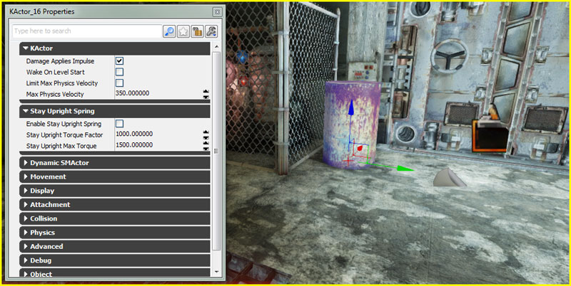 - Right-Click on the actor and choose Convert > Convert [CurrentActorType] to StaticMeshActor.
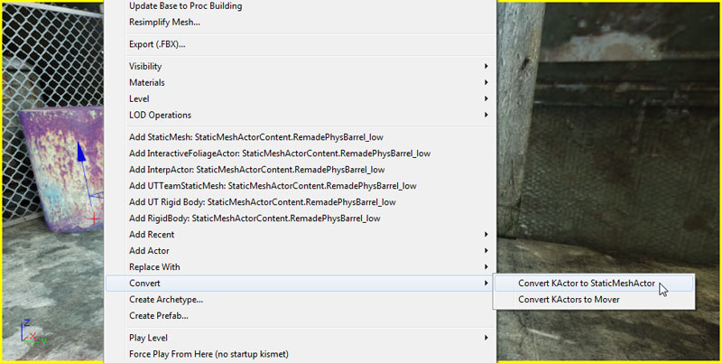 - The actor has been converted to a StaticMeshActor, as seen in the Property Window.
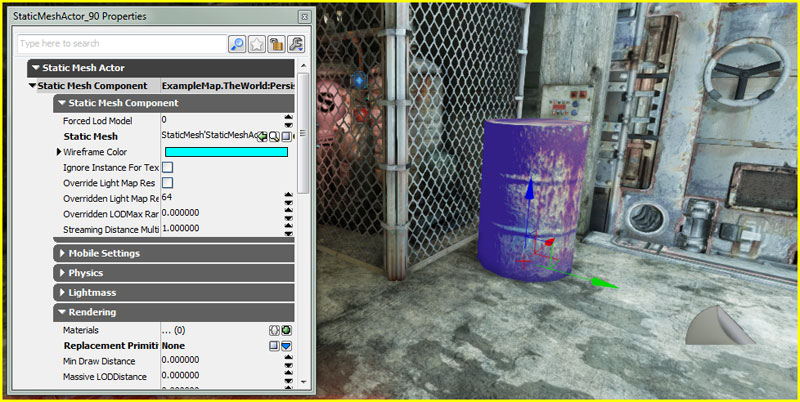
Material Override
- In the viewport, select the StaticMeshActor you want to assign a new Material to and press F4 to open its properties in the Property Window.
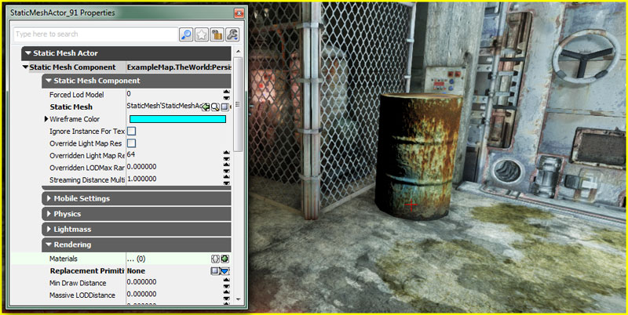 - In the Rendering category of the StaticMeshComponent, add a new item to the Materials array by clicking the 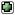 button. If the StaticMesh has more than one material slot, you may need to add more than one item as the items in the array match the material slots of the StaticMesh.
- In the Content Browser, select the Material you want to apply to StaticMeshActor in the map.
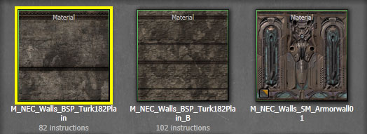 - Press the button for the corresponding item in the Materials array to assign the material. The mesh is now displayed with the Material applied.
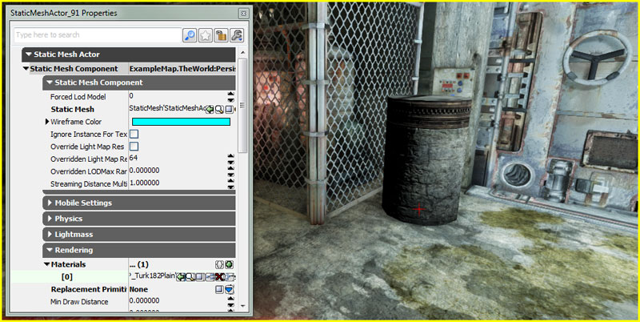
- In the Content Browser, locate the Material you want to apply to StaticMeshActor in the map.
- Left-Click on the Material in the Content Browser and drag the mouse (while holding the left mouse button down) from the Content Browser to the section of the StaticMeshActor in the viewport you want to apply the Material to.
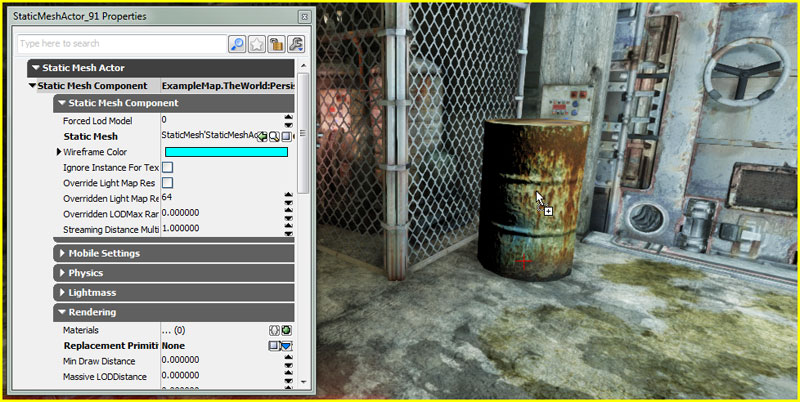 - Release the left mouse button to apply the Material. The mesh is now displayed with the Material applied and the Materials array in the Property Window has been updated.
Collision
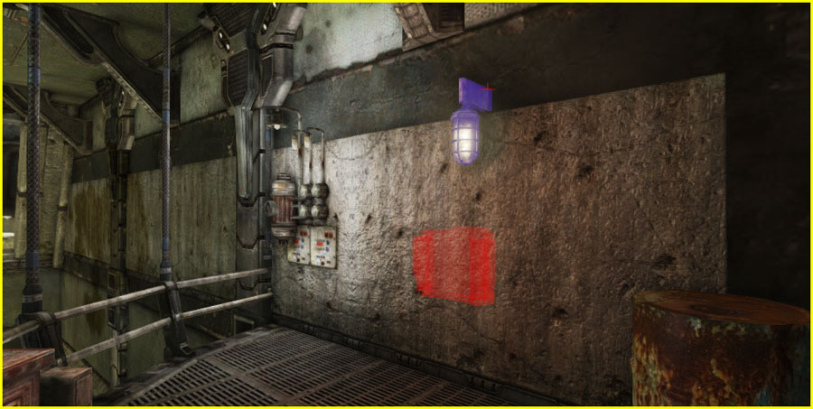 The selected StaticMeshActors outside the window make up the background environment where the player is never able to reach.
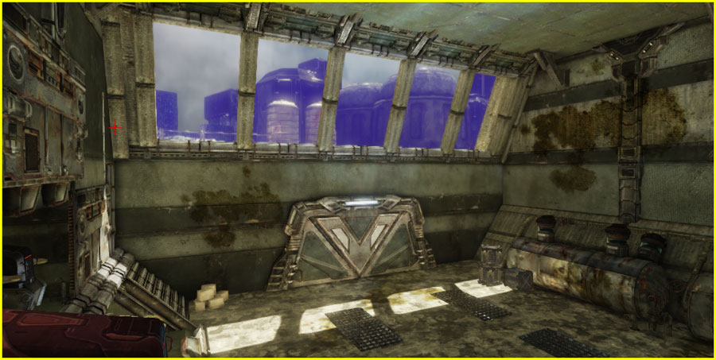 Collision Types The Collision Type property is a method of exposing several collision settings in a simple way. Changing this value in Unreal Editor will set the low level flags such as CollideActors, BlockActors, BlockNonZeroExtent, BlockZeroExtent and BlockRigidBody on the Actor and its CollisionComponent to match the description of Collision Type.
| Collision Type | Description |
|---|---|
| COLLIDE_CustomDefault | Programmer set collision. This restores collision to defaults set in the default properties when selected. |
| COLLIDE_NoCollision | The Actor will neither block nor touch other actors or traces. |
| COLLIDE_BlockAll | The actor will block other actors and traces. |
| COLLIDE_BlockWeapons | The actor will block zero extent traces only, such as instant hit weapons. |
| COLLIDE_TouchAll | The actor will touch other actors and traces. |
| COLLIDE_TouchWeapons | The actor will touch zero extent traces only, such as instant hit weapons. |
| COLLIDE_BlockAllButWeapons | The actor will block other actors and non-zero extent traces only. |
| COLLIDE_TouchAllButWeapons | The actor will touch other actors and non-zero extent traces only. |
| COLLIDE_BlockWeaponsKickable | Same as COLLIDE_BlockWeapons, but also enables the actor to be kicked by player physics. |
- Collide Complex
- If enabled, simplified collision geometry on this actor will be ignored and collision will be performed per-polygon. Simplified collision geometry is generated in Unreal Editor or within a 3D content creation package. Colliding per polygon is useful for non-zero extent traces so that bullets will collide accurately. Colliding per-polygon is not recommended for Actor movement as it is expensive to do so.
- Block Rigid Body
- if enabled, Actors using PhysX should collide against this actor.
- No Encroach Check
- If enabled, encroachment checking when this Actor is moved is turned off. Enabling this speeds up the game, but the actor will not be able to touch triggers, push players, enter or exit volumes.
- Path Colliding
- If enabled, this Actor can block paths during path building in Unreal Editor.
- Collision Component
- Reference to the component used for collision calculations of this Actor.